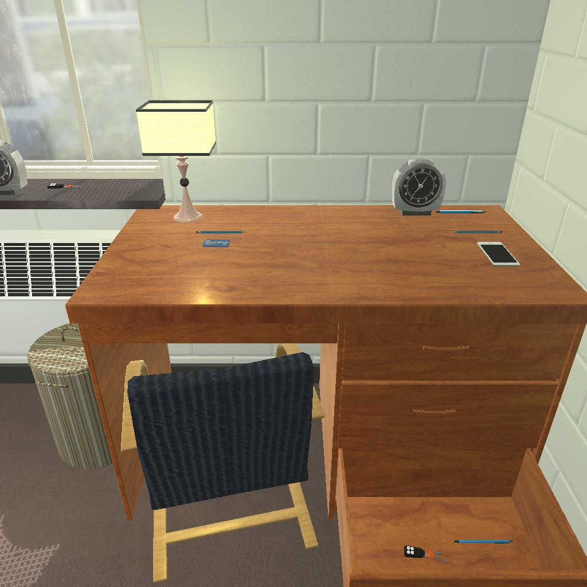

---------------------------------------------------------task: 8---------------------------------------------------------
--------------------------------------------------------------------------------------------------------------------------------------------------------------------
--------------------------------------------------------------------------------------------------------------------------------------------------------------------
Step:--------------------------------------------------------------------------10-------------------------------------------------------------------------------
----------------------------------------
VLM Prompt:
Image1:
Image2:
Image3:
**Instruction**
1. Analyze the provided images to identify all visible household objects and compare the difference between images (e.h. whether the object is opened or not and taken on hand or not), focusing on those relevant to the task description "put some laptop on desk."
2. Use the analysis of images and the task hint "The agent must find an object of the desired type, pick it up, find the correct location to place it, and put it down there." to answer the question: what is the most reasonable action in the choices for the task description "put some laptop on desk"?
3. Decide and write the answer using the template: The answer is: (i): , where i is the real number. If there is no desired object in images, search every place based on **Initial Observation** to find the object. And if no one is exactly correct, choose a similar answer.
**Initial Observation**
You are in the middle of a room. Looking quickly around you, you can see bed (1), garbagecan (1), desk (1), sidetable (1), drawer (1-5), laundryhamper (1)
**Answer Choices**
(1): go to bed 1
(2): go to garbagecan 1
(3): go to desk 1
(4): go to sidetable 1
(5): go to drawer 1
(6): go to drawer 2
(7): go to laundryhamper 1
(8): go to drawer 4
(9): go to drawer 5
(10): close drawer 3
(11): take alarmclock 1 from drawer 3
(12): take laundryhamperlid 1 from drawer 3
(13): take alarmclock 2 from drawer 3
(14): take cellphone 1 from drawer 3
(15): take keychain 2 from drawer 3
(16): take creditcard 1 from drawer 3
(17): take pen 3 from drawer 3
(18): take pen 1 from drawer 3
(19): take pencil 1 from drawer 3
(20): take pencil 2 from drawer 3
(21): take keychain 1 from drawer 3
(22): use desklamp 1
**Answer**
Let's think step by step by following the instructions.
----------------------------------------
----------------------------------------
Original Response:
1. In Image 1, there is a desk with a desklamp, a clock, a pen, and a cellphone on it. The chair is pushed in, and there is no laptop present. In Image 2, the image is identical to Image 1, which means there is no change or action taken between these two images. In Image 3, we see that drawer 3 of the desk is open, and several small items like pens, a pencil, a keychain, and an alarm clock are visible inside the drawer. There is still no laptop visible on the desk or in the open drawer.
2. The task is to "put some laptop on desk," which means the agent must find a laptop first and then place it on the desk. Since there is no laptop visible in any of the images, the agent should search every place based on the initial observation to find the object.
3. The answer is: (5): go to drawer 1. This action is chosen because the laptop is not visible on the desk or in the open drawer 3, so the agent must search the other drawers starting with drawer 1 to find the laptop. Once found, the agent can then proceed to place it on the desk.
----------------------------------------
----------------------------------------
>>> Refine Original VLM Response and Get Pure Action: go to drawer 1
----------------------------------------
-----------------------------------------------------------------
Running time: 9.989651203155518 seconds
Total Money: 3.765790000000001
-----------------------------------------------------------------
-----------------------------------------------------------------
Text Observation:You arrive at loc 4. The drawer 1 is open. On the drawer 1, you see a book 1, a cd 1, and a pen 2.
-----------------------------------------------------------------
UNSUCCEED